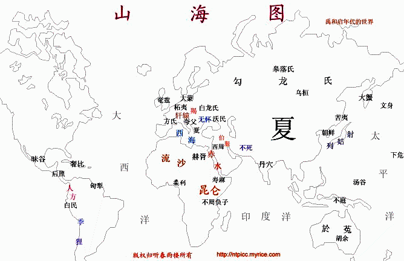

佚名
"上古三大奇书之一"
|
|
|
| 华夏上古神话-《山海经》（仅供参考） 作者：黎明之子 说华夏上古神话就不得不提《山海经》，而《山海经》是中国上古三大奇书之一，为"禹"和"启"时代的世界地图，后由于原图佚失，仅留下了原图的注释和说明，所以变的充满神秘和未知，从古至今没有人能够说明白其中的事物。 《山海经》与《易经》、《黄帝内经》并称为上古三大奇书。成书的年代不详，作者也不详，鲁迅先生认为是上古之巫书，随着时间的推移，这种说法不免有其片面性。 在研究《山海经》前，应先了解一些知识。 《山海经》古时称为《山海图》。从名称上来看，应有图，而今不存，从全书来看，更象一幅世界地图，上面标满了各方的地理，物产，氏族，历史演变以及风土人情。 从时代上看，书中多记载有某地产金，某地产玉，成书年代应为青铜时代。 而书中的所记的方位与现今有一些差距，因为当时地球的倾斜角度要小，北极点应在今天的格陵兰一带，即今日的北磁极附近。 在3600-6000年前，不知因出了什么原因，估计是一颗巨大的太阳系外星球从地球的近旁擦过，使地球的极点移到了现在的位置，相应的地理方位也发生了偏转，古人惊恐的发现‘天倾西北，地陷东南’。赤道也相应的发生了偏移，而横亘蒙古至中欧的大草原应比现在更偏向南方。 而这颗星球与谷神座附近的行星发生了碰撞，在谷神星附近留下难以计数的碎片，于是地球上的人便看到了碰撞后的碎片，天文学家称为谷神座小行星，其中巨大燃烧着的碎片有九个，加上太阳，上古的人类称为十个太阳，且在较长一段时间内照耀着地球，光辉所到之处万物枯焦，此时应为尧这个氏族执政时期， 为《山海图》中记载后羿射日的由来。 由于过于炎热，海洋中的水份大量蒸发，所以当碎片冷却，气温下降，于是就开始下暴雨，且这几个碎片接二连三地坠入地球的海洋中，称为焦侥，冲击掀起涛天巨浪，引发全球性的大洪水，这就是传说中的大洪水，大禹治水和诺亚方舟都是这个时代的事情。 关于语言，上古时人类只有一种语言，《圣经》中记载，上古人类在通天塔未造好便倒掉后，语言便发生了混乱，上古时，bpmf，gkh，zcsr，jg等等，上古人类是无法分清的，也就是今天多音字的由来，如:给--贾；又如:夏--亚，亚细亚就是夏，希腊也是夏，由此看来古希腊与中国有着渊源。 根据语音，山海图中许多地名现在大都存在，北方的部族勾龙氏，又称皋落氏即今天的俄罗斯；邻族白龙氏不要说就是白俄罗斯；石夷也就是柘夷，独逸，即德意志，戎民即是日耳曼；方氏为法兰西；夸父为斯拉夫；奄兹为英吉利，乌孙为英格兰人的祖先撒克逊人；其邻大月氏为今天的威尔士；大夏为希腊；大蒙即丹麦；羯为捷克，西落鬼戎为斯洛伐克；黄帝曾孙黎最初的封地在无怀，后亦称吴回，即乌克兰；白马即巴尔干（半岛），大穆之野即多瑙河流域，沃民之国为伏尔加河流域。黄帝杀蚩尤后，封黎于祝，又称祝栗，后来也称作吴回，亦称乌桓，也就是东胡的由来，后称通古斯，通古斯大爆炸发生的地方。 在非洲，共工之臣相柳所居的赫胥为今天的埃及，相柳即法老的另一读音，禹杀相柳，筑帝尧台，帝喾台，帝丹朱台，帝舜台，为众帝之台。共工之台即胡夫金字塔，台在其东，台四方，隅有一蛇，虎色，面冲南方，不用说就是狮身人面像，西方称为司芬克斯；寿麻即索马里；不周负子即莫桑比克。 在美洲，下夷，虾夷即夏威夷；文身国即阿留申群岛；汉大即加拿大；日落之处的昧谷即墨西哥；后照后称洪札即洪都拉斯；应龙杀蚩尤和夸父的匈犁之谷即南美的苏里南；而古代的印加帝国即是被击败后浮海而去的人方。 在大洋洲，日升之处的汤谷即汤加；於菟即澳大利亚；不庭胡余为巴布亚新几内亚和澳大利亚的合称；不庭，又称波母地丘，为巴布亚岛，印尼称为伊里安岛，巴布亚新几内亚称为新几内亚岛，此岛在高空中看象是一只巨大的鸟，而岛上就有一处地名叫鸟头；胡余为澳大利亚的古音；由于大洋洲中多是新西兰或新喀里多利亚这种地名的国家，所以无法更进一步的研究，待以后查到古地名再说。 匈牙利国名的由来并不是根据匈奴来的，自称‘上帝之鞭’的匈奴人在被汉朝军队赶出了北方草原后，渐渐西侵，经过五百年的生息，370年，在伟大的匈奴王阿提拉的率领下，毁灭了强大的罗马帝国，但这并不是匈牙利的的由来。而黑山(黑塞哥维亚)和匈奴倒应该有些关系。匈牙利的读音来自黄帝的封地轩辕之国，黄帝生于轩辕之丘，有罴氏(有熊氏)音读近似为阿尔卑斯。匈牙利人认为第一位国王为阿尔伯特，更证明了这点，黄帝来自欧洲？或许吧，也不一定，因为只不过他的封地在奥地利、匈牙利一带罢了。 鲧，禹和后启的封地为大夏，在今天的希腊，爱琴海中的克里特岛上的米诺斯王宫或许真是禹和启父子的王宫，启后来推翻了尧氏族的政权，建立了夏朝，由此看来夏朝和古希腊有着不可割舍的关系，当然今天的希腊人和古希腊人不是同一种族，并没有多少关系。 南斯拉夫和俄罗斯的关系，炎帝氏族的勾龙氏(又称皋落氏)在黄帝时期任后土，黄帝虽打败了炎帝，但还是重用他的氏族，后土生信，信生夸父，博父；后土生蚩尤；蚩尤不顺从黄帝，与黄帝氏族发生战争，被黄帝击败，应龙杀蚩尤及其侄子夸父于凶犁之谷。夸父追日的夸父应该是夸父氏族的人。因此，南斯拉夫与俄罗斯起源同一个种族，同是炎帝子孙，同为赤狄别种，所以科索沃问题发生后，南斯拉夫要求并入俄罗斯联帮，也就不奇怪了。
 |